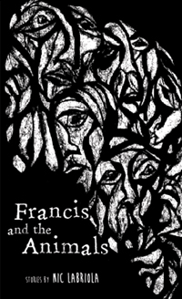

Francis and the Animals
Nic Labriola
Nic Labriola's debut collection of short stories shows us what happens when the drive to fit in is overcome by the burning need to stand out. It’s when you laugh at a funeral, when you fall in love with a stranger, when you let loose or break down, or brawl for the first time. It’s coming back to a soul you thought you’d lost; it’s uncovering the truth about a soul you thought you knew. It’s the unbearable pressure of dissatisfaction and the messy release of indulgence. Set in the darkness of everyday life in the city, Francis and the Animals gives us a series of urban fables--a surreal bundle of comical misadventures and tragic missteps on the unavoidable hike for individuality in an unaccommodating environment.